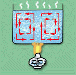

전도. 대류. 복사.
이것을 '열 에너지가 전달되는 방식' 이라고 배웠다.
이정도도 기억 못하는 사람은 없겠지?
전도는 고체 사이에서 열이 전달되는 방식이고.
대류는 액체와 기체의 순환에 의해 열이 전달되는 방식이고.
복사는 전달물질(매개체) 없이 열이 전달되는 방식이다.
하지만 이건 거짓말이다.
열 에너지가 전달되는 방식은 전도와 복사 뿐이다. 대류는 없다.
무슨 소리냐고?
열 에너지가 전달된다고 함은 물질의 열 에너지가 다른 물질로 이동하는 것을 말한다.
하지만 대류는 물질이 이동하는것이지 열 에너지가 이동하는 방식은 아니다.
일례로 냄비속의 물을 바닥부터 가열하면 뜨거워진 물이 위로 이동한다. 이것이 대류다. 단지 뜨거워진 물이 비중이 낮아져서 위로 이동하는것 뿐이다. (보다 정확히 말하자면 상대적으로 비중이 높아진 차가운 물이 내려오면서 뜨거운 물을 위로 밀어내는 것이다.)
결코 에너지가 "전달" 된것이 아니다.
그렇다면 뜨거운물과 차가운물이 섞였을때에는 어떠한 현상이 발생하는것일까? 그것은 바로 '전도' 다. 뜨거운물과 차가운물 사이에는 '전도' 가 일어나고 있는 것이다.
보다 정확히 말하자면 두 물체 사이에서는 전도와 복사가 함께 일어나고 있다.
대류는 그저 열 에너지를 가진 물질이 '이동' 한것에 불과하다.
뜨거운 쇠구슬을 차가운 물 속에 담궜다면. 이것이 열 에너지의 '전달' 일까?
아니다. 차가운 물속에 담궈진 자체는 물질의 '이동'에 불과한 것이다. 쇠구슬과 물 사이에는 '전도' 와 '복사' (구체적으로 말한다면 '근거리 복사' 라고 할 수 있을것이다.)가 일어나고 있는 것이다.
이것을 '열 에너지가 전달되는 방식' 이라고 배웠다.
이정도도 기억 못하는 사람은 없겠지?
전도는 고체 사이에서 열이 전달되는 방식이고.
대류는 액체와 기체의 순환에 의해 열이 전달되는 방식이고.
복사는 전달물질(매개체) 없이 열이 전달되는 방식이다.
하지만 이건 거짓말이다.
열 에너지가 전달되는 방식은 전도와 복사 뿐이다. 대류는 없다.
무슨 소리냐고?
열 에너지가 전달된다고 함은 물질의 열 에너지가 다른 물질로 이동하는 것을 말한다.
하지만 대류는 물질이 이동하는것이지 열 에너지가 이동하는 방식은 아니다.
일례로 냄비속의 물을 바닥부터 가열하면 뜨거워진 물이 위로 이동한다. 이것이 대류다. 단지 뜨거워진 물이 비중이 낮아져서 위로 이동하는것 뿐이다. (보다 정확히 말하자면 상대적으로 비중이 높아진 차가운 물이 내려오면서 뜨거운 물을 위로 밀어내는 것이다.)
결코 에너지가 "전달" 된것이 아니다.
그렇다면 뜨거운물과 차가운물이 섞였을때에는 어떠한 현상이 발생하는것일까? 그것은 바로 '전도' 다. 뜨거운물과 차가운물 사이에는 '전도' 가 일어나고 있는 것이다.
보다 정확히 말하자면 두 물체 사이에서는 전도와 복사가 함께 일어나고 있다.
대류는 그저 열 에너지를 가진 물질이 '이동' 한것에 불과하다.
뜨거운 쇠구슬을 차가운 물 속에 담궜다면. 이것이 열 에너지의 '전달' 일까?
아니다. 차가운 물속에 담궈진 자체는 물질의 '이동'에 불과한 것이다. 쇠구슬과 물 사이에는 '전도' 와 '복사' (구체적으로 말한다면 '근거리 복사' 라고 할 수 있을것이다.)가 일어나고 있는 것이다.
너무 강조에 강조를 거듭해서 지루할지도 모르겠다.
하지만 이게 바로 이 글의 핵심이다.
하지만 이게 바로 이 글의 핵심이다.
왜 우리는 대류가 열 에너지의 전달 방식이라는 말을 믿어왔을까?
우린 바보였나?
그렇다. 선생님의 말씀을 절대진리로 믿는 바보였을 뿐이다.
* 이 글은 농담이 아닌 확고한 사실 입니다. 하지만 절대로 자신의 신념 없이 일방적으로 받아들이지 마시기 바랍니다. 그건 선생님의 말씀을 곧이 곧대로 믿는것과 아무런 차이가 없습니다. *